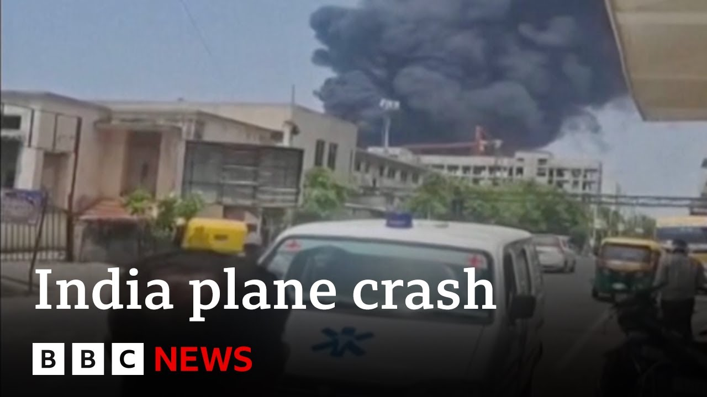

【突发：飞往伦敦的客机在印度坠毁 | BBC新闻】
Summary: An Air India flight from Ahmedabad to London Gatwick crashed shortly after takeoff, with reports of black smoke and a possible residential area impact. Over 200 passengers were on board, and rescue teams are mobilized.
摘要： 印度航空一架从艾哈迈达巴德飞往伦敦盖特威克的航班起飞后不久坠毁，据报道现场黑烟滚滚，可能坠入居民区。机上有200多名乘客，救援队伍已出动。

⏱️ Estimated Reading Time: 16 min
📚 六级生词 📚 雅思生词 📚 托福生词 📚 专八生词 📚 SAT生词 📚 考研生词 📚 GRE生词 📚 高考生词
Hello, this is BBC News.
你好，这里是BBC新闻。
I'm Katherine Braang and I just want to bring you some breaking news.
我是凯瑟琳·布朗，现在为您带来突发新闻。
Now, we're getting reports of a plane crash in India.
我们收到印度发生飞机坠毁的报道。
An Air India flight taking off from Amedabad International Airport crashed shortly after takeoff.
印度航空一架从艾哈迈达巴德国际机场起飞的航班起飞后不久坠毁。
Um, video on social media shows black plumes of smoke billowing.
社交媒体上的视频显示黑烟滚滚。
It appears to have crashed in a residential area.
飞机似乎坠毁在居民区。
And I just want to bring you a bit more of what uh we had from our correspondents in India.
我想为您带来更多我们在印度的记者发回的消息。
Um and this is reports coming in from Amedabad International Airport uh in Gojgerat saying that an Air India flight taking off from the international airport there crashed shortly after takeoff.
来自古吉拉特邦艾哈迈达巴德国际机场的报道称，印度航空一架从该国际机场起飞的航班起飞后不久坠毁。
There's video on social media of that crash at the moment and it shows black fumes billowing into the skies and um our correspondent goes on to say it appears that the plane crashed in a residential area.
目前社交媒体上有坠机视频，显示黑烟升入天空，我们的记者进一步表示飞机似乎坠毁在居民区。
Uh and of course we're still trying to get information um on the ground about this particular crash.
我们仍在努力获取关于这起坠机事件的现场信息。
um the number of people who are likely involved in that crash as well.
以及可能涉及此次坠机的人数。
But this is a significant development coming in from uh Amedabad uh in uh Gujarat uh in India and I think you can see the maps at the moment on our screens of that particular location of the airport there and this is a Medabad um in uh Gujarat and so reports at the moment coming in of an Air India flight that has crashed shortly after takeoff and uh we're of course trying to get as much information as we can um about what's going on there there uh in Medabad and we'll bring you any developments um as soon as we get it.
这是来自印度古吉拉特邦艾哈迈达巴德的重要进展，您可以在屏幕上看到机场的具体位置。目前报道称印度航空一架航班起飞后不久坠毁，我们正尽力获取更多信息，并将及时更新。
What we know so far is that uh video on social media uh that's now being posted of this crash shows black fumes billowing into the skies.
目前所知，社交媒体上发布的坠机视频显示黑烟升入天空。
Um and uh this plane it appears crashed shortly after takeoff and the crash appears to be in a residential area.
这架飞机似乎起飞后不久坠毁，且坠机地点可能在居民区。
Of course, we do not know yet um where this plane was headed, where it was going.
我们尚不清楚这架飞机的目的地。
Um but what we can see on our screens at the moment is the initial flight radar of this flight.
但我们现在可以在屏幕上看到这架航班的初始飞行雷达。
Um and of course, as we can see there, this is a very short um line there uh of the flight radar as shown on the map there on this flight radar data.
从飞行雷达数据可见，雷达上的航线非常短。
Um and it appears to show really what we have been reporting there which is that uh the flight um crash shortly after takeoff.
这似乎证实了我们的报道，即航班起飞后不久坠毁。
I'm just hearing in from my director who says that the flight number was flight A171.
我刚从导演那里得知航班号为A171。
This is flight A171 that had been taking off that had taken off from Amedabad Akmedabad um international airport.
这是从艾哈迈达巴德国际机场起飞的A171航班。
We now understand that this flight was headed to London Gatwick airport um just outside of London.
我们现在了解到这架航班原定飞往伦敦郊外的盖特威克机场。
So this is a report now confirmation that this flight an Air India flight uh A171 that was taking off from Akmedabad International Airport crashed shortly after takeoff and this flight was headed to London Gatwick airport.
现已确认，印度航空A171航班从艾哈迈达巴德国际机场起飞后不久坠毁，原定飞往伦敦盖特威克机场。
We of course do not know at the moment how many people were on this flight.
我们目前尚不清楚机上人数。
Um but this is really a significant um development, significant story here at the moment.
但这是目前非常重要的进展。
Video that's been posted on social media shows black fumes billowing into the sky.
社交媒体上的视频显示黑烟升入天空。
Um of course this flight crashing shortly after takeoff.
这架航班起飞后不久坠毁。
What we understand from our correspondence um in Delhi is that this flight crashed in a residential area.
我们从德里的记者处了解到，飞机坠毁在居民区。
At the moment, the flight radar data that we have that we're looking at uh on our screens illustrating what we know of this crash that this flight uh crashed shortly after it took off from Amedabad International Airport and it appears to have crashed it seems from the flight radar data that we have just 10 minutes after takeoff.
目前的飞行雷达数据显示，航班从艾哈迈达巴德国际机场起飞后约10分钟坠毁。
If you're just joining us, this is BBC News where we bring you the breaking news of the an Air India flight which has crashed shortly after takeoff from Akimemedabad International Airport.
如果您刚刚加入我们，这里是BBC新闻，为您带来印度航空一架航班从艾哈迈达巴德国际机场起飞后不久坠毁的突发新闻。
This flight was headed to London Gatwick Airport.
这架航班原定飞往伦敦盖特威克机场。
We understand that it crashed shortly after takeoff.
据了解，飞机起飞后不久坠毁。
The flight trader data that we're looking at suggests that it took off.
我们查看的飞行雷达数据显示飞机起飞。
It crashed just 10 minutes after it took off.
起飞后仅10分钟坠毁。
Um, at the moment, video on social media, which we can't show you at the moment, shows black fumes billowing into the sky uh from the scene of that crash, which we understand to be in a residential area.
目前社交媒体上的视频显示坠机现场黑烟升入天空，据信坠机地点在居民区。
At the moment we don't know how many people were on board this flight um that was that had taken off from Akmedabad International Airport.
我们尚不清楚这架从艾哈迈达巴德国际机场起飞的航班上有多少人。
Um of course we are working very hard to get as much as possible on this.
我们正全力获取更多信息。
Um but I just want to bring you a statement um coming in from a spokesperson for Air India saying flight A171 operating from Akmedabad to London Gatwick was involved in an incident today on the 12th of June 2025.
印度航空发言人声明称，2025年6月12日，从艾哈迈达巴德飞往伦敦盖特威克的A171航班发生事故。
At this moment we are ascertaining the details and will share further updates at the earliest.
目前正在核实细节，将尽快提供进一步更新。
Um so and this is that post there uh which I was just reading out um and of course showing that um uh the statement from Air India.
这就是印度航空的声明。
I'll just read it out to you again.
我再为您读一遍。
Uh coming in from a spokesperson there confirming that this flight AI171 um was traveling from Akmedabad and headed to London Gatwick.
发言人确认这架AI171航班从艾哈迈达巴德飞往伦敦盖特威克。
um confirming that it was involved in an incident and at the moment um they are ascertaining the details and will share further updates at the earliest opportunity.
确认航班发生事故，目前正在核实细节，将尽快提供更新。
And I just want to bring you an update there now coming in from the Reuters news agency.
现在为您带来路透社的最新消息。
The police in Akmedabad confirming that at least 242 people were on board the flight that crashed in Akmedabad and we understand that this flight was headed to London Gatwick airport.
艾哈迈达巴德警方确认坠毁航班上至少有242人，据了解该航班原定飞往伦敦盖特威克机场。
So the initial confirmation of the numbers of people likely involved in this crash, police saying at least 242 people were on board this Air India flight that was traveling from Akimemedabad to London Gatwick airport.
警方初步确认，这架从艾哈迈达巴德飞往伦敦盖特威克的印度航空航班上至少有242人。
You're live with BBC News.
这里是BBC新闻直播。
A reminder of the breaking news that we have this morning coming in from India, which is that an Air India flight AI71 traveling from set to travel from Akmedabad to London Gatwick airport has crashed shortly after takeoff.
提醒您今早来自印度的突发新闻：印度航空AI71航班从艾哈迈达巴德飞往伦敦盖特威克机场，起飞后不久坠毁。
A statement from the Air India um company has said that uh the flight was involved in an incident and they were working to ascertain the information.
印度航空声明称航班发生事故，正在核实信息。
Um we can now go to Delhi and uh my colleague there uh Aruna Day.
现在连线我们在德里的同事阿鲁纳·戴。
Uh and Aruna Day just tell us what we know so far um about this crash.
阿鲁纳·戴，请告诉我们目前对这起坠机事件的了解。
Uh uh Katherine, it's a a very very uh sort of fast-paced development that we're trying to track.
凯瑟琳，这是一起进展非常迅速的事件，我们正在追踪。
So still trying to gather information uh as as we try and piece together uh information coming in from various outlets.
我们仍在收集信息，并整合来自各方的消息。
So we being very careful about what we're putting out there because it's still as I said a developing story and it's a sensitive story.
因此我们非常谨慎，因为正如我所说，这是一起正在发展且敏感的事件。
So we're just trying to cross-check everything.
我们正在交叉核实所有信息。
So let me just put out the facts for you as we know it as we speak.
现在为您列出目前已知的事实。
The only official confirmation that we've got is from India's national carrier that is Air India.
我们获得的唯一官方确认来自印度国家航空公司印度航空。
uh saying that flight AI171 operating from Ahmedabad to London Gatwick was involved in an incident that is per their official statement dated 12th of June 2025.
其2025年6月12日的官方声明称，从艾哈迈达巴德飞往伦敦盖特威克的AI171航班发生事故。
At this moment they say they are still assertaining details and will share further updates as and when they do so.
目前他们表示仍在核实细节，将在获得后提供更新。
This is the official statement coming in uh from the uh uh the the the airline that is Air India.
这是印度航空的官方声明。
Uh the other pieces of information that we've managed to piece together at the moment is that this uh plane crash took place uh near the airport in Ahmedabad.
我们目前整合的其他信息显示，这起坠机事件发生在艾哈迈达巴德机场附近。
Ahabad is a very very important city in the western state of Gujarat.
艾哈迈达巴德是古吉拉特邦西部非常重要的城市。
It also happens to be the home state of Prime Minister Narendra Modi.
这里也是总理纳伦德拉·莫迪的家乡。
So this is happened in the city of Ahmedabad in western India.
这起事件发生在印度西部的艾哈迈达巴德市。
Uh what we're also getting to know is that there were over 200 passengers on board that flight.
我们还了解到机上有超过200名乘客。
I'm not able to confirm it the exact number of passengers, but over 200 is what I can confirm to you at the moment.
目前无法确认确切人数，但可以确认超过200人。
So, that certainly uh makes this situation a lot more serious.
这使得情况更加严重。
Uh we don't know where exactly the crash has happened, whether it was an open area or a residential area, but it's something that we're still getting information, but we've seen some videos that have come up on social media which show black uh smoke emanating from the uh crash site.
我们尚不清楚坠机具体地点是开阔区域还是居民区，但社交媒体上的视频显示坠机现场冒出黑烟。
Uh there are some houses that are visible in the area, but I would hesitate to sort of pinpoint what kind of location this was.
视频中可见一些房屋，但无法确定具体位置类型。
Uh we've also tried to piece together some information from the flight radar website to try and understand where the last signals were picked up.
我们还从飞行雷达网站获取信息，试图了解最后信号的位置。
Uh uh it was received seconds after takeoff, which then leads many analysts to believe that perhaps this incident happened moments after the plane took off.
信号在起飞后几秒内消失，分析认为事故可能发生在起飞后不久。
But again, as I said, these are all uh facts that will be looked into as we progress reporting on this story.
但这些都是需要进一步核实的信息。
Uh so the last signal that was received was uh uh was moments seconds after uh takeoff.
最后接收到的信号是在起飞后几秒。
The situation on the ground remains obviously extremely chaotic at the moment.
目前地面情况显然非常混乱。
Rescue teams have been mobilized.
救援队伍已出动。
Uh this is information coming in from India's aviation minister.
这是来自印度航空部长的消息。
They're on the highest alert as rescue teams uh have been mobilized is what we're picking up.
救援队伍已出动，处于最高警戒状态。
We're also trying to put together all these updates on the BBC News website as well.
我们也在BBC新闻网站上整合这些更新。
So, if you want live coverage, you can also log on to the website and get minute-by-minute updates as we try and put all the pieces of information together on this big breaking story.
如需实时报道，可登录网站获取每分钟更新。
But certainly very very concerning news.
这无疑是非常令人担忧的消息。
Once again, let me just recap for you and summarize what we know at the moment.
再次为您总结目前已知信息。
Air India, India's national carrier has issued a statement that one of its flights operating from the city of Ahmedabad in western state of Gujarat was flying to London Gatwick.
印度国家航空公司印度航空声明称，其一架从古吉拉特邦艾哈迈达巴德市飞往伦敦盖特威克的航班发生事故。
It was involved in an incident.
航班发生事故。
This took place uh in the city of Ahmedabad.
事件发生在艾哈迈达巴德市。
We know that it was a passenger aircraft with over 200 passengers on board making the situation all the more serious being looked at very seriously which is why rescue teams have been mobilized to head to the spot.
这是一架载有200多名乘客的客机，情况非常严重，救援队伍已赶往现场。
We don't know exactly what this spot was.
我们尚不清楚具体地点。
Whether it was an open area or not is something that we're we're still trying to understand and get more confirmation about.
是否为开阔区域仍需确认。
But we have seen some pictures that have been circulating on social media which seem to suggest that it could also be uh close to some sort of uh uh uh some to to population as well.
但社交媒体上的图片显示可能靠近人口密集区。
So that would be another area of concern that we would need to watch out for.
这是另一个需要关注的方面。
We haven't gotten any confirmation about the condition or what the situation is at the crash site.
尚未获得坠机现场状况的确认。
But as I said, rescue teams are on the ground and they're on their way.
但如我所说，救援队伍正在路上。
This is still information that is just coming in.
信息仍在不断更新。
So you'd appreciate that we're still trying to uh really make sense of what really is happening as information comes in thick and fast.
希望您理解，我们正努力理清快速涌入的信息。